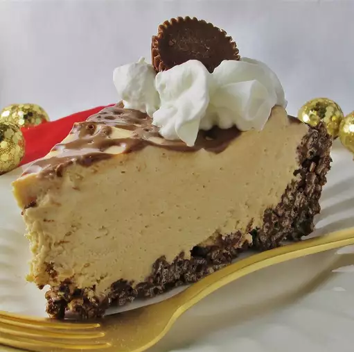

Frozen Peanut Butter Cheesecake

Description:
A cheesecake, just frozen and with peanut butter?
Ingredients:
- 1/3rd cup butter
- 1 cup of semi-sweet chocolate chips
- 2 1/2 cups of crispy rice cereal
- 1 (8 ounce/225 gram) package of cream cheese, softened
- 1 (10 ounce/280 gram) can of sweetened condensed milk
- 3/4th cup of peanut butter
- 2 tablespoons of lemon juice
- 1 teaspoon of vanilla extract
- 1 cup of whipped cream
- 1/2 cup of chocolate fudge (hehe, fudge.) sauce
Steps:
- In a heavy sauce pan over low heat, melt the butter and chocolate chips. Remove from heat and gently stir in rice cereal until coated. Press into the bottom and sides of a 9 inch pie plate. Chill 30 minutes.
- In a large bowl, beat cream cheese until fluffy. Gradually beat in condensed milk and peanut butter until smooth. Stir in lemon juice and vanilla. Fold in whipped cream. Pour into prepared crust. Drizzle chocolate topping over pie and freeze for 4 hours or until firm. Keep in freezer until ready to serve, and return leftovers to the freezer as well.
Back to List of Recipes